CSS Grid Layout is a new, powerful layout system
that allows a web page to easily be divided into columns and rows.
This CSS module defines a two-dimensional grid-based layout system,
optimized for user interface design.
The 'modern' CSS Grid Layout specification began as a first public
working draft published on 7 April 2011.
TABLE -> FLOAT -> POSITIONING AND INLINE-BLOCK -> BOX MODEL -> CSS flex box -> CSS grid layout
Groups of properties
CSS Grid defines according to four groups of properties:
The explicit grid
Gaps
Aligning things
The implicit grid
The explicit grid
You can use two properties to make an explicit grid:
grid-template-columns
grid-template-rows
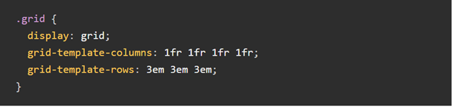
grid-template-columns create a new column for each length value you add to it.
grid-template-rows work the same way.
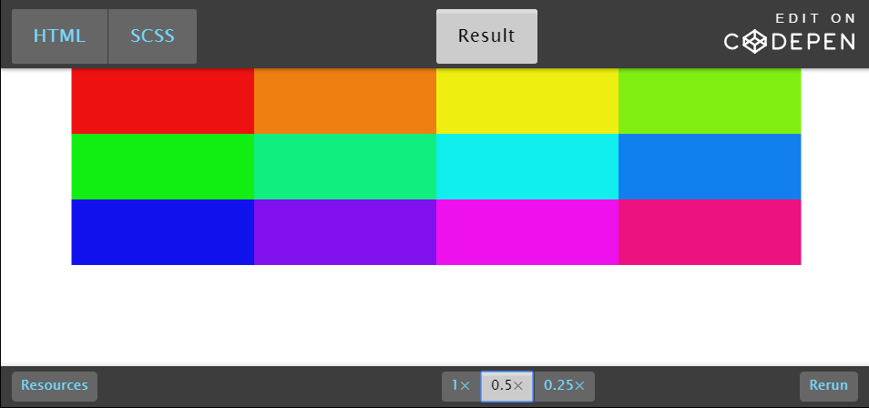
Positioning items in your grid
You can control the position of items in a grid with two properties:
grid-column
grid-row
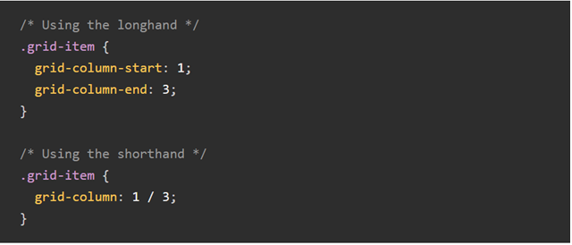
A shorthand for grid-column-start and grid-column-end
works this way: grid-column-start / grid-column-end.
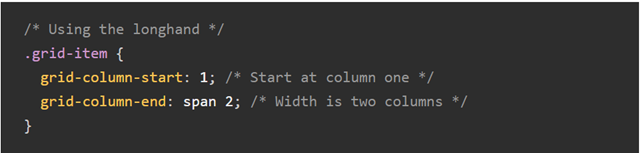
You can also use the span keyword to tell CSS Grid
how many columns you want your item to take up.
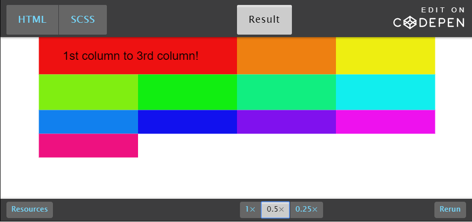
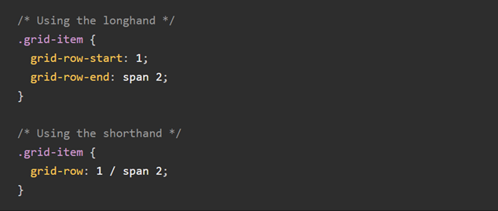
A shorthand for grid-row-start and grid-row-end
works this way: grid-row-start / grid-row-end.
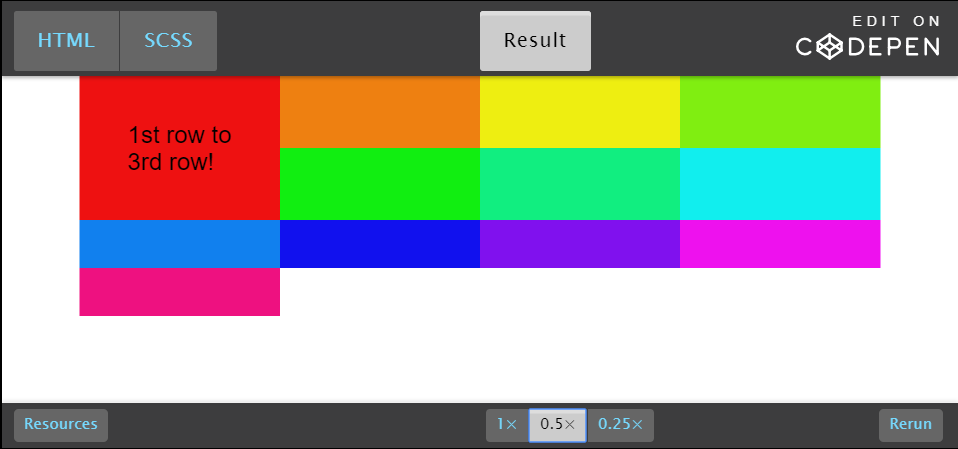
Positioning items in named areas
To create a grid area, you should use grid-template-areas on the grid.
Some notes on creating grid areas:
You must name every grid area
If you don’t want to name an area, use .
Each group separated by inverted quotes ("row1" "row2") signifies a row
Each value within inverted quotes ("area1 area2") signifies an area
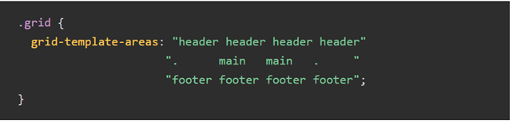
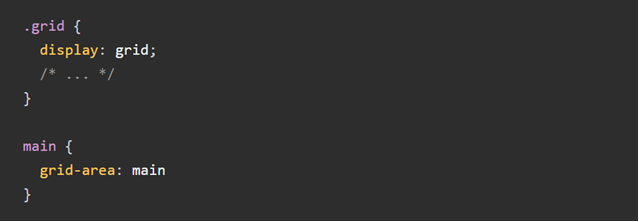
To place items IN a grid area, you use the grid-area property on the grid item.
To place items ON a grid-area, you use grid-area.
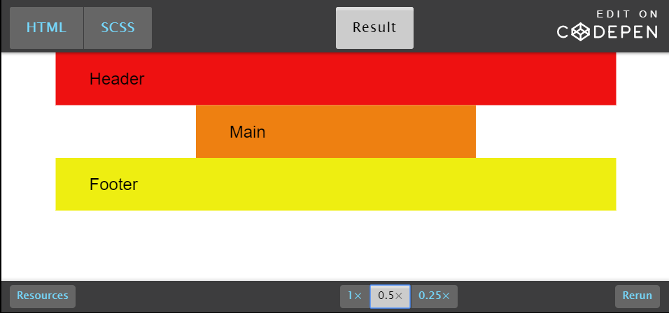
Gaps
There are three properties to remember:
grid-column-gap
grid-row-gap
grid-gap
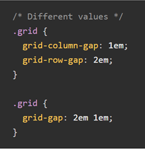
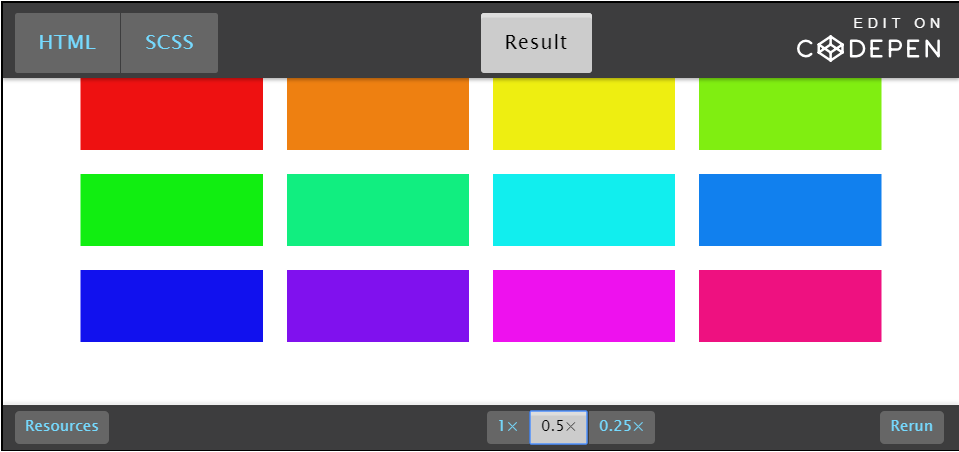
There are six properties to align things:
justify-content
align-content
justify-items
align-items
justify-self
align-self
Two groups of patterns:
The first group is justify vs align
The second group is content, items, and self
Justify vs align
Each CSS Grid has two axes:
The inline-axis
The block-axis
Inline-axis reads left to right. Block-axis reads top to bottom
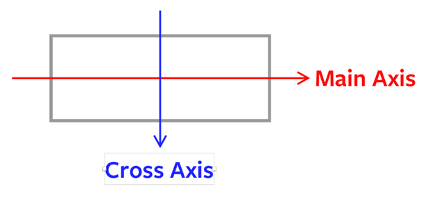
So the inline and block axis is:
Inline: left to right
Block: top to bottom
Content, items, and self
justify-content and align-content lets you align the grid itself
to the available space outside of the grid.
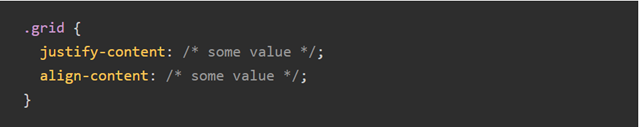
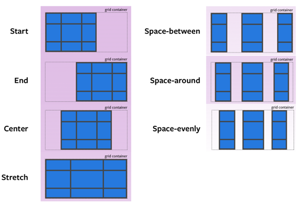
justify-items and align-items lets you align grid-items
to any available whitespace in their respective cells.
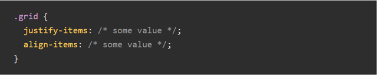
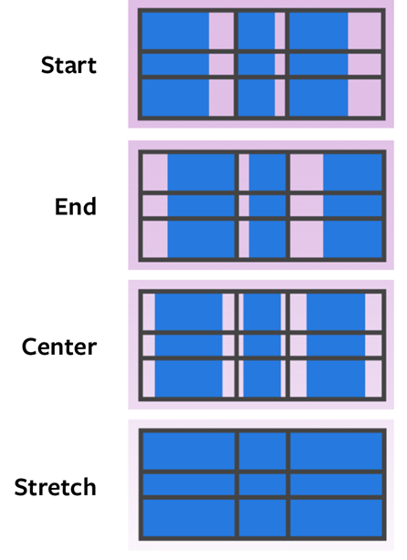
justify-self and align-self does the same thing as justify-items
and align-items. The difference is it lets you change the alignment
for only one grid-item.
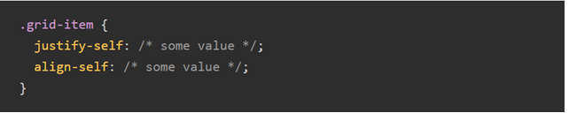
Implicit Grid
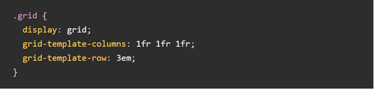
But we have six items!
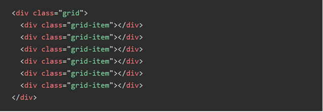
You can adjust the automatically created column(s)
or row(s) with these two properties:
grid-auto-columns
grid-auto-rows
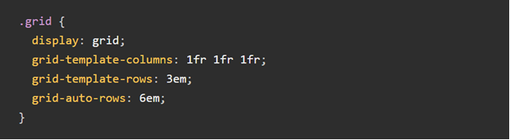
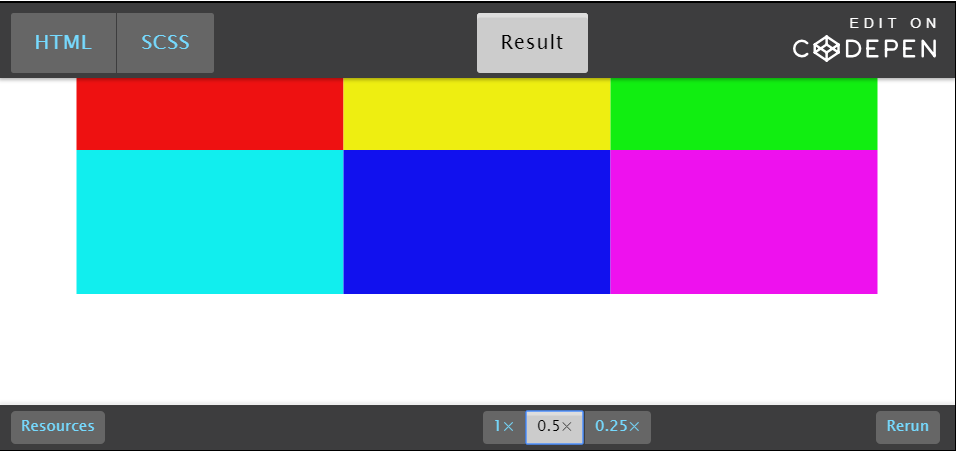
Conclusion
"Why CSS Grid?"
cleaner markups;
increase of maintainability and flexibility for your layouts;
easy to achieve more complicated layouts as you can work with columns and rows simultaneously;
the current support is at 88.3% of the global website traffic, so it is definitely okay.